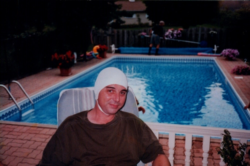

Wegway Primary Culture — Magazine
People

Editor/Publisher Steve Armstrong relaxing at the Wegway Mansion.
The masthead
Editor and Publisher: Steve Armstrong
Art Director and Principal Designer: Paul Hogarth, AOCAD
Special Events Co-ordinator: Meredith Dault
Internet Editor and Webmaster: Paul Smerek
Quotes Editor: André Questcequecest
Mysterious Advisor: Wm. F. Krendall
Accountant: David Burkes, B. Com, CA
Circulation and Marketing: Emily Armstrong
Administration: Rita Edwards
Internet Research: Aarifa Stewart
Manager, U.S. Operations: Greg Franczak
Our very first subscriber: June Bjorn of Thunder Bay, Ontario, Canada.
Want to get in touch? Contact page →